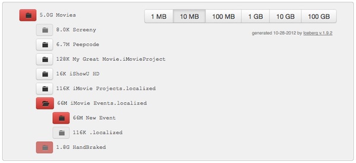

Find the big directories lurking under the surface of your disk
Iceberg is the updated incarnation of a surprisngly useful tool that I originally wrote in Java, which makes it easy to find the big directories that are wasting space on your disks.
This version has two parts: a Bash script that generates an interactive HTML disk report, and the JavaScript and CSS that give it its interactivity. The latter, plus Bootstrap and jQuery, are loaded from the Internet, so you don't need to download them to use Iceberg.
This functionality has proven useful time and time again, not only on my Mac laptop, but also on the various Linux machines I work with. That's why the HTML generation is done by a Bash script, it seemed like a good choice for lowest-common denominator in those *nix environments. Usage on remote servers, which you may or may not have a GUI for, is also the reason for splitting the report-generation part from the report-viewing part. Generate the HTML on your remote machine, download it to your local PC, and pop it open in the browser of your choice.
Download the script: iceberg.sh.
Make it executable:
chmod +x iceberg.sh
Invoke the Bash script, specifying HTML output and the directory to report on, saving the output to a file:
iceberg.sh ~/Movies > iceberg_movies.html
Open the HTML file in your browser (after downloading it to your PC if necessary). It will look something like this:

You can also see a live, interactive sample page here.
The page starts with directories 1GB or larger highlighted in red. Change that threshold with the size buttons at the top of the window.
Click on folder/directory buttons to expand them and see their subdirectories. Directories with no subdirectories cannot be expanded (those buttons are deactivated).
Find those directories with old backups, unneeded downloads, etc. that are wasting your disk space, and go clean them up.
Repeat as desired. Remember, the HTML report is a static file. If you add or delete files, you'll need to re-run the Bash script, and refresh your browser.
Options:
-d du_input_filenamedu command, but instead to use the given input file.
Useful for development testing, or if you want to get directory-size info from a remote
machine without installing iceberg.sh on it.-l-p-t tmp_dirdu output, which may
be large. Note that the HTML output, which may also be large, can be placed elsewhere
if necessary by using the output redirect (>).Questions, problems, or suggestions? If you're on GitHub, then you can open an issue, fork, etc. from the project page there. If you're a normal person, your best bet is probably to contact me on Twitter at @cgrayson.